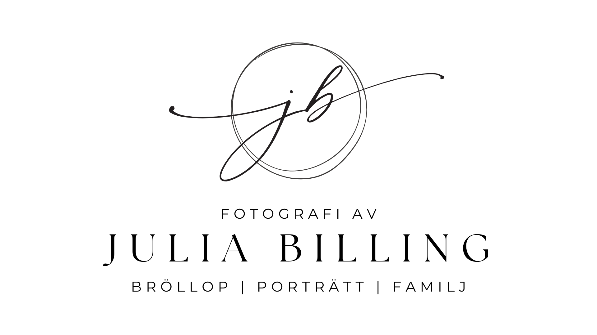
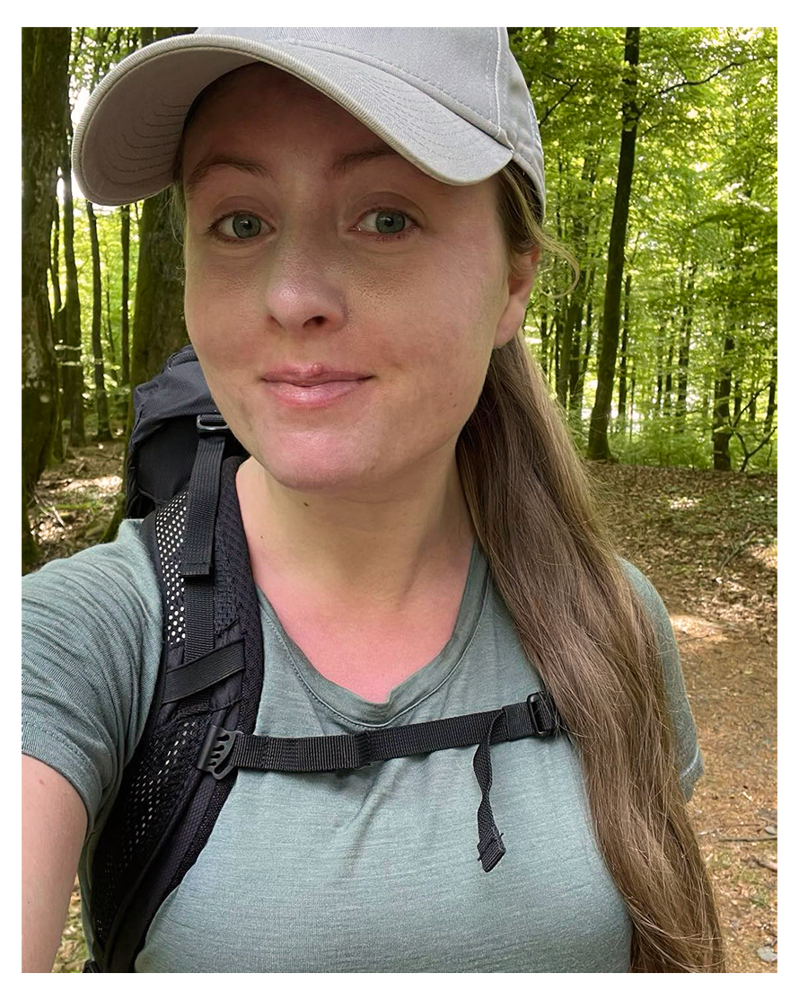

Fånga livets vackraste ögonblick med
naturliga och kärleksfulla bilder
Välkommen till en plats där minnen förevigas med värme och lekfullhet!
Jag är en fotograf som specialiserar mig på bröllop, porträtt och
familjefotografering. Genom att skapa en avslappnad och rolig stund
tillsammans fångar jag äkta känslor och unika ögonblick som speglar
vilka ni är.
Mina bilder är naturliga, personliga och fyllda av kärlek – skapade för att
ni ska kunna återuppleva er historia om och om igen.
Låt oss skapa bilder som ni bär med er för livet!
MINA TJÄNSTER

BRÖLLOP

VEM ÄR JAG BAKOM KAMERAN?
Jag heter Julia Billing, men för min morfar har jag alltid varit
Jullan – ett smeknamn som hängt med hela livet. Jag är 31
år gammal och känner mig som mest hemma i vandringskängor,
med tält och sovsäck packade i ryggsäcken,
på ett fjäll eller djupt inne i skogen.
Mitt intresse för att fånga ögonblick och detaljer som ofta går
obemärkta väcktes redan i tonåren. Sedan gymnasiet har jag haft
glädjen att fotografera bröllop, gravida magar, nyfödda små händer,
kärleksfulla familjer och porträtt i alla möjliga former.
Det bästa med att stå bakom kameran är att fånga just era känslor
och minnen. Att få vara med och dokumentera de stora ögonblicken i
era liv och skapa bilder ni kan återvända till, gång på gång, betyder
allt för mig.
